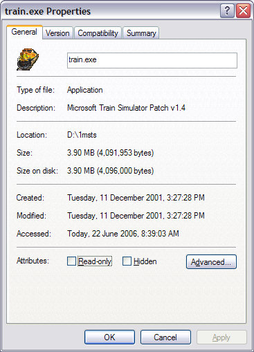
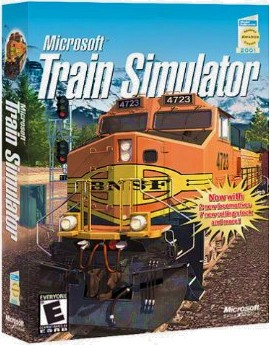
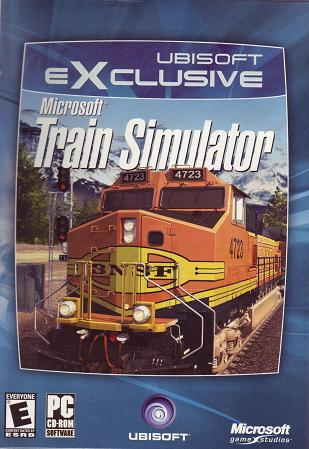
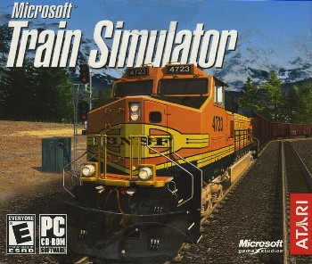
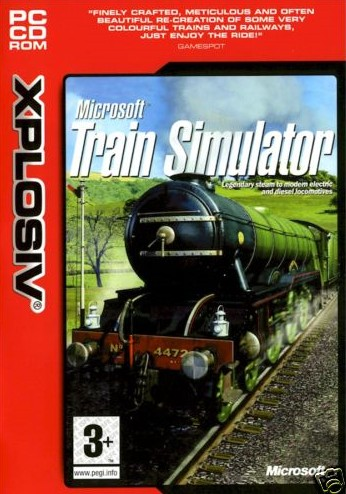
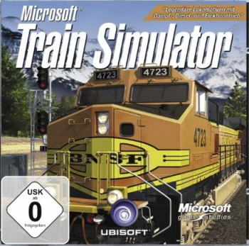

MSTS Version 1.4 Web-based Updates
Overview
These original (un-modified) installers contain the web files that updated MSTS v1.0 to v1.2/1.4. This enabled the early purchasers of MSTS to upgrade their game to the last released version of MSTS.

|

|
These original (un-modified) installers contain the web files that updated MSTS v1.0 to v1.2/1.4. This enabled the early purchasers of MSTS to upgrade their game to the last released version of MSTS.
Microsoft Train Simulator was released in mid-2001. There were some "issues", and Microsoft released a patch in April 2002 that (was supposed to) address a variety of issues.
When you installed version 1.0, you didn't need to have a CD in the drive to make the game work. However, when v1.4 was released on disk, the program was modified to ensure that a CD was always present in the drive. Fairly obviously, users of v1.0 who upgraded to v1.4 using the web update couldn't "have a CD in the drive".
There was only ever ONE update of MSTS. Depending on the market and the distributor, the package said that the version was called v1.2, v1.3 or v1.4. Even Microsoft call it v1.2 on their own website!
When you look at the program file's "Properties", the upgrade clearly states "Patch v1.4":


Microsoft originally released MSTS in a boxed version.

Sometime after the release of v1.4, the box was replaced by a 2-CD Amaray-style DVD case with either the BNSF Dash 9 or the Flying Scotsman on the cover, depending on the market into which it was sold.
Microsoft handed over distribution of MSTS to third parties in about 2005 and the game was released under Atari (US) and Ubisoft (Europe/Asia/Oceania) labels. Despite the new distributors, the game remained unchanged at ver 1.4.

As time went on, Atari changed the packaging (NOT the content) from a DVD case to a two-CD jewel case (you'll see these advertised on amazon and elsewhere as "jc").

Xplosiv (a UK-based company) then took over distribution of MSTS - and that version is the v1.4 update version. THey went into liquidation in 2009.

Ubisoft in Europe still distributes MSTS as v1.4 in a jewel case package. It is available from
amazon.de and costs about AU$32 delivered to Au8stralia.
Click here to go to the Amazon.de website.

Three reasons:
Listed below are the downloads you need to bring your MSTS up to date, not need a CD in the drive and be ready to install MSTS-Bin. The Train Update file below contains the v1.4 update, updated TechDocs and updated Tools utilities. That's why it may be bigger than the cut-down versions you'll see elsewhere on the Web.
{kind=link}
{kind=link}